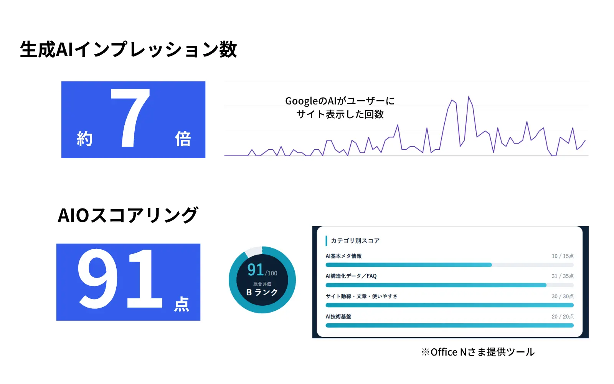

この記事でわかること
- 「上位なのに引用されない」を3つの状態に分けて見分ける方法
- 15分でできる、自分で確かめる手順と記録の残し方
- 引用されない主な原因5つと、原因ごとの直し方
- Search Consoleで分かること・分からないこと、手を引く判断の目安
結論：検索で上位でも、AI Overview（AI による概要）に引用されないことは珍しくありません。まず「AI概要がそもそも出ていない」「出ているが他サイトが引用されている」「引用が毎回変わる」のどれかを見分けてください。他サイトが引用されている場合は、質問への答えがページの奥に埋もれているか、AIが調べた周辺の論点に自社ページが答えていないことが多いです。スニペットを制限する設定が付いていないかも、最初に確認します。Googleは、AI概要に出るための特別な設定やファイルは不要だと説明しています。
「上位なのに引用されない」は3つの状態に分かれる
「検索では3位以内に出ているのに、AI Overviewの引用元に自社ページが出てこない」という相談は、AI概要の表示が広がってから増えています。ただ、同じ「引用されない」でも、起きていることは一つではありません。直す場所を間違えないために、まず状態を3つに分けます。
| 状態 | 起きていること | 最初に見るところ |
|---|---|---|
| A. AI概要が出ていない | そのキーワードでは、AI による概要自体が表示されていない | 自社ページではなく、キーワードの性質 |
| B. 他サイトが引用されている | AI概要は出ているが、引用元のリンクに自社ページが入っていない | 答えの位置・周辺の論点・スニペットの設定 |
| C. 引用が毎回変わる | 引用される日とされない日がある、人によって見え方が違う | 1回の結果で判断せず、記録を取って傾向を見る |
Googleのヘルプでは、AI による概要はすべての検索で表示されるわけではなく、生成AIが特に役立つとシステムが判断した場合に表示されると説明されています（出典：Google 検索の AI による概要で、情報をすばやく簡単に見つける｜Google 検索 ヘルプ）。Aの状態なら、自社ページをいくら直しても引用は生まれません。
また、順位と引用の関係について、Ahrefsは2025年7月に、AI概要が出た100万キーワードを分析した結果を公開しています。検索1位のページがAI概要の上位3件に引用される割合は約50%で、順位と引用の相関は中程度（スピアマン相関係数0.347）でした（出典：Googleでの上位表示が AI による概要の引用に直結？｜Ahrefs）。上位であることは有利ですが、引用を約束するものではない、というのが出発点です。
自分で確かめる：15分でできる確認手順
原因を探す前に、いまの状態を記録します。あとで直したときに「変わったのか」を比べるためです。
確認の手順
- 狙っているキーワードを5〜10個に絞る：Search Consoleの検索パフォーマンスで、自社ページが10位以内に入っているクエリから選ぶ
- ログアウトした状態（シークレットウィンドウ）で検索する：普段の検索履歴の影響をできるだけ避ける
- AI概要が出たかどうかを記録する：出ない場合は「A」として、その日の結果を残す
- 出た場合は引用元をすべて控える：AI概要内のリンクを開き、どのサイトのどのページかをURLで記録する
- AI概要の文章と、引用元の本文を見比べる：回答のどの一文が、引用元のどの段落から来ているかを確かめる
- 自社ページの同じ論点の書き方を見る：同じことが書いてあるか、書いてあるならページのどこにあるかを確認する
- 日をあけて3回、同じ条件で繰り返す：1回で判断せず、Cの状態かどうかを見分ける
手順の5つ目が一番大事です。引用元のページと自社ページを並べると、「引用元は冒頭の2行で答えている」「自社ページは同じことを4つ目の見出しの中で書いている」のように、差がはっきり見えることが多いです。
記録の目安：キーワード・日付・AI概要の有無・引用元URL・自社ページの順位の5項目を、表に1行ずつ残します。ここで作った表が、直したあとの比較の基準になります。
引用されない主な原因5つ
原因1：スニペットを制限する設定が付いている
Googleは、検索に表示されるページの情報を制限する方法として、nosnippet・data-nosnippet・max-snippet・noindexを挙げています（出典：AI 機能とウェブサイト｜Google 検索セントラル）。テーマやプラグインの設定で、本文の要所にdata-nosnippetが付いていたり、max-snippetの値が小さく設定されていたりすると、AI機能で使える範囲が狭くなります。順位は出ているのに引用だけされない場合、最初に疑う場所です。
原因2：答えがページの奥に埋もれている
検索の上位は、ページ全体の評価で決まります。一方、AI概要が引用するのは、質問に対する答えになっている部分です。前置きや会社紹介が長く、肝心の答えが中盤以降にある、答えが表や画像の中にしかない、といったページは、上位でも引用されにくくなります。当社が実務で見ている範囲でも、引用されているページは、見出しの直後に1〜2文で答えを言い切っていることが多いです。
原因3：AIが調べた周辺の論点に答えていない
Googleは、AI概要やAIモードが、関連する複数のサブトピックやデータソースに対して検索を実行し、それをもとに回答を組み立てる「クエリ ファンアウト」という手法を使うことがあると説明しています（出典：AI 機能とウェブサイト｜Google 検索セントラル）。たとえば「◯◯ 費用」で上位でも、AIが「費用の内訳」「安くする方法」「注意点」を別々に調べ、それぞれに答えている別のページを引用することがあります。自社ページがメインの問いにしか答えていないと、周辺の論点で引用を取られます。
原因4：上位に出ている理由と、AI概要の問いがずれている
同じキーワードでも、検索結果の上位と、AI概要がまとめる内容が一致するとは限りません。自社ページが「会社紹介」や「サービス案内」として上位に出ている一方、AI概要は「やり方」や「原因」の説明をまとめている、というケースです。この場合は、サービスページを直すより、問いに答える解説ページを別に用意したほうが早いことがあります。
原因5：内容が古い、または根拠が見えない
料金・制度・仕様など、時期によって変わる情報は、更新日が新しく、出典が明示されたページが引用されやすいと当社は見ています。数年前の数字が残っている、根拠が書かれていない、といったページは、上位に残っていても引用の候補から外れやすくなります。
原因別の直し方と、直す順番
直す順番は、手間が小さく、効果の確認がしやすいものからです。
| 順番 | やること | 確認方法 |
|---|---|---|
| 1 | meta robotsとHTMLを確認し、意図しないnosnippet・data-nosnippet・max-snippetを外す | ページのソースを表示して検索する。URL検査ツールで再クロールを依頼する |
| 2 | 各見出しの直後に、問いへの答えを1〜2文で書く。表や画像の中だけにある答えは本文にも書く | 引用元のページと並べて、答えの位置が同じくらい前にあるかを見る |
| 3 | AI概要の文章を分解し、自社ページが答えていない論点を見出しとして足す | 確認手順で控えた引用元が、どの論点で引用されているかを照らし合わせる |
| 4 | 古い数字や制度の記述を更新し、出典と確認日を書く | 更新日と出典が本文に入っているか |
| 5 | 問いがずれている場合は、解説ページを別に作り、サービスページからリンクする | 新しいページがインデックスされ、狙うクエリで表示が出始めたか |
やりすぎ注意：Googleは、AI による概要やAIモードに表示されるための追加の要件はなく、特別な最適化も必要ないと説明しています（出典：AI 機能とウェブサイト｜Google 検索セントラル）。「AI向けのファイルを置けば引用される」「専用の構造化データが必須」といった提案には、公式の裏付けがありません。まずは本文の答え方を直してください。
周辺の論点を足すときは、1ページに詰め込みすぎないことも大切です。論点が大きく異なるなら、別のページに分けて内部リンクでつなぐほうが、それぞれの問いに正面から答えやすくなります。
効果の見方：Search Consoleで分かること・分からないこと
Googleは、AI機能に表示されたサイトのトラフィックも、Search Consoleの検索タイプ「ウェブ」の検索パフォーマンスに含まれると説明しています（出典：AI 機能とウェブサイト｜Google 検索セントラル）。つまり、表示回数やクリック数の変化は見られますが、どれがAI概要経由かを分けて見る項目は、公式ヘルプでは案内されていません。
そのため、効果の確認は2つを組み合わせます。
- Search Console：直したページの、狙うクエリでの表示回数・クリック数・平均掲載順位を、直す前の4週間と直した後の4週間で比べる
- 検索画面の記録：確認手順で作った表を、週1回同じ条件で更新し、引用元に自社ページが入った回数を数える
表示回数が多いのにクリックが少ない状態の見方は、Search Consoleで表示されるのにクリック0の原因でも整理しています。
自社メディアでは、質問に答える構成と継続的な更新を続けた結果、生成AI側の指標も伸びました。

この数字は自社メディアでの結果で、他のサイトで同じ結果を保証するものではありません。
それでも引用されないときの判断の目安
上の5つを直しても変わらない場合は、次の目安で、追い続けるか、別の打ち手に移るかを判断します。
判断の目安
- 4〜6週間、記録を続けても引用ゼロ：そのキーワードは、引用元が大手メディアや公式サイトで固まっている可能性が高い。より具体的な悩みのキーワードに移る
- AI概要がほとんど出ない：状態Aのキーワード。引用ではなく、通常の検索順位とクリック率の改善に集中する
- 引用されたりされなかったりする：状態C。直す方向は合っているので、同じ書き方を関連ページにも広げる
- 順位自体が落ちてきた：引用より先に、検索流入の減少として原因を切り分ける
順位が落ちてきた場合の切り分けは、検索流入が減った原因を切り分ける手順｜AI概要も確認を参考にしてください。
LnXの見解
「上位なのに引用されない」相談を受けて実際に画面を並べると、原因は技術的な設定よりも、答え方にあることがほとんどです。上位に出ているページは、検索エンジンからの評価はすでに得ています。足りないのは、AIが一文を抜き出しやすい形で答えているかどうかです。見出しの直後で言い切る、周辺の論点にも答える、根拠と確認日を書く。この3つは、人間の読者にとっても読みやすいページの条件と同じです。
一方で、AI概要の表示や引用元は検索のたびに変わり、自社だけでは管理できない部分も残ります。引用を一つずつ追いかけるより、悩みが具体的なキーワードで、質問に正面から答えるページを増やしていくほうが、結果として引用の機会も増えると当社は考えています。どのキーワードから手を付けるか迷う場合は、現在のSearch Consoleのデータをもとに一緒に整理できます。
※Googleの仕様や画面は更新されます。実際の作業前に最新の公式情報も確認してください。
よくある質問
Q検索1位なら、AI Overviewにも必ず引用されますか？
必ずではありません。Ahrefsが2025年に公開した100万キーワードの調査では、検索1位のページがAI Overviewの上位3件に引用される割合は約50%でした。順位と引用には相関がありますが、上位でも引用されない状態は珍しくありません。
QAI Overviewに引用されるために、特別な設定やファイルは必要ですか？
Googleは、AI による概要やAIモードに表示されるための追加の要件はなく、特別な最適化も不要だと説明しています。条件は、ページがインデックスに登録され、検索でスニペットが表示できる状態であることです。
Q引用されたかどうかは、Search Consoleで分かりますか？
AI機能に表示されたサイトのトラフィックは、Search Consoleの検索タイプ「ウェブ」の検索パフォーマンスに含まれます。ただし、AI Overview経由かどうかを分けて見る項目は公式ヘルプでは案内されていないため、実際の検索画面を定期的に記録して補います。
Q同じキーワードでも、AI Overviewが出たり出なかったりするのはなぜですか？
Googleのヘルプでは、AI による概要はすべての検索で表示されるわけではなく、生成AIが特に役立つとシステムが判断した場合に表示されると説明されています。表示や引用元は検索のたびに変わることがあるため、日をあけて複数回確認してください。
Qnosnippetを付けているページは引用されますか？
Googleは、nosnippet・data-nosnippet・max-snippet・noindexで、検索に表示されるページの情報を制限できると説明しています。これらの設定で本文の表示を制限していると、AI機能で使われる範囲も狭まるため、意図せず付いていないかを確認してください。